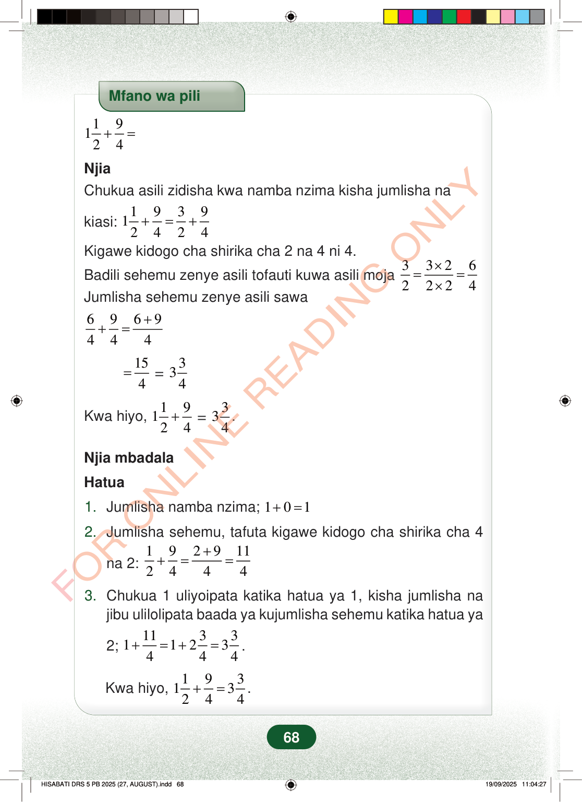

Mfano wa pili19124+=NjiaChukua asili zidisha kwa namba nzima kisha jumlisha nakiasi:193912424+=+Kigawe kidogo cha shirika cha 2 na 4 ni 4.Badili sehemu zenye asili tofauti kuwa asili moja33262224×==×Jumlisha sehemu zenye asili sawa6969444++==154=334Kwa hiyo,=19124+334.Njia mbadalaHatua1.Jumlisha namba nzima;101+=2.Jumlisha sehemu, tafuta kigawe kidogo cha shirika cha 4na 2:1929112444++==3.Chukua 1 uliyoipata katika hatua ya 1, kisha jumlisha najibu ulilolipata baada ya kujumlisha sehemu katika hatua ya2;11331123444+=+=.Kwa hiyo,19313244+=.68
Mfano wa pili
1 9 12 4 + =
Njia Chukua asili zidisha kwa namba nzima kisha jumlisha na
kiasi: 1 9 3 9 12 4 2 4 + = +
Kigawe kidogo cha shirika cha 2 na 4 ni 4.
Badili sehemu zenye asili tofauti kuwa asili moja 3 3 2 6 2 2 2 4 × = = × Jumlisha sehemu zenye asili sawa
6 9 6 9 4 4 4 + + =
15 4 =
3 34
Kwa hiyo,
1 9 12 4 +
3 34 .
Njia mbadala
Hatua
1. Jumlisha namba nzima; 1 0 1 + =
2. Jumlisha sehemu, tafuta kigawe kidogo cha shirika cha 4
na 2:
1 9 2 9 11 2 4 4 4 + + = =
3. Chukua 1 uliyoipata katika hatua ya 1, kisha jumlisha na jibu ulilolipata baada ya kujumlisha sehemu katika hatua ya
2; 11 3 3 1 1 2 3 4 4 4 + = + = .
Kwa hiyo, 1 9 3 1 3 2 4 4 + = .
68
Mfano wa pili1 1/2 + 9/4 =NjiaChukua asili, zidisha kwa namba nzima, kisha jumlisha na kiasi: 1 1/2 + 9/4 = 3/2 + 9/4.Kigawe kidogo cha shirika cha 2 na 4 ni 4.Badili sehemu zenye asili tofauti kuwa asili moja: 3/2 = (3 × 2)/(2 × 2) = 6/4.Jumlisha sehemu zenye asili sawa: 6/4 + 9/4 = (6 + 9)/4 = 15/4 = 3 3/4.Kwa hiyo, 1 1/2 + 9/4 = 3 3/4.Njia mbadalaHatuaJumlisha namba nzima: 1 + 0 = 1.Jumlisha sehemu; tafuta kigawe kidogo cha shirika cha 4 na 2: 1/2 + 9/4 = (2 + 9)/4 = 11/4.Chukua 1 uliyoipata katika hatua ya 1, kisha jumlisha na jibu la sehemu: 1 + 11/4 = 1 + 2 3/4 = 3 3/4.Kwa hiyo, 1 1/2 + 9/4 = 3 3/4.